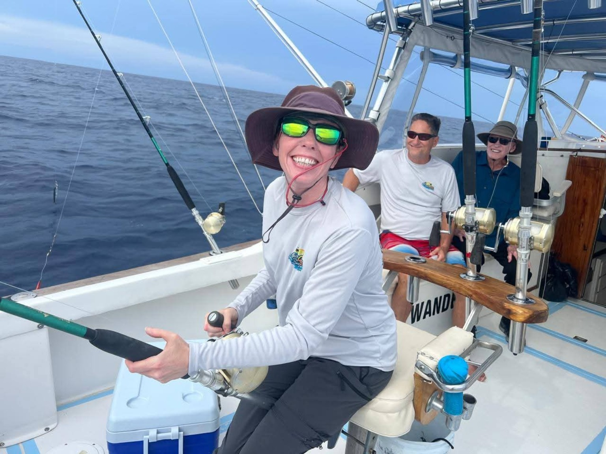

About
Curious by default.
I’m a leader and builder who likes difficult questions, useful systems, and ideas that become more interesting when different perspectives meet.
The human behind the work.
I read widely—strategy, psychology, systems, and fiction—because new language changes the questions we can ask.
I explore AI for work and for fun. I build tools, test workflows, and look for the line between a compelling demonstration and capability that can survive in a real organization.
I’m also developing Coherence: an interactive-fiction world that became a practical experiment in building a company and its AI-enabled operating tools. The story stays a story; the systems it inspires are real enough to use.
